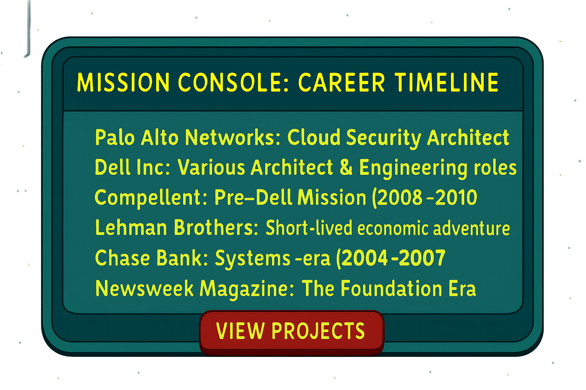

Mission Console: Career Timeline

- Palo Alto Networks: Cloud Security Architect (2023–Present)
- Dell Inc: Various Architect & Engineering roles (2010–2021)
- Compellent: Pre-Dell Mission (2008–2010)
- Lehman Brothers: Short-lived economic adventure (2007–2008)
- Chase Bank: Systems-era (2004–2007)
- Newsweek Magazine: The Foundation Era (7 years)
View Projects